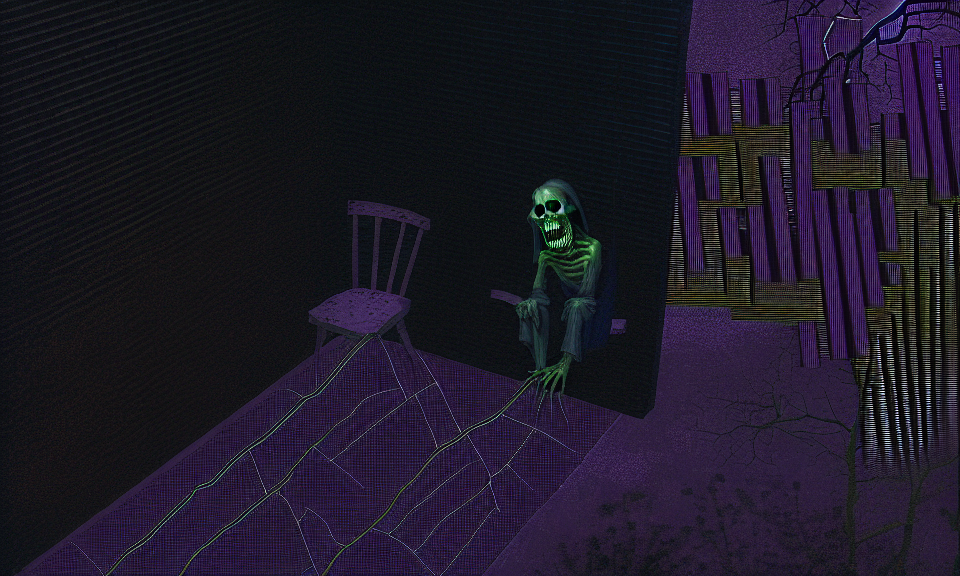
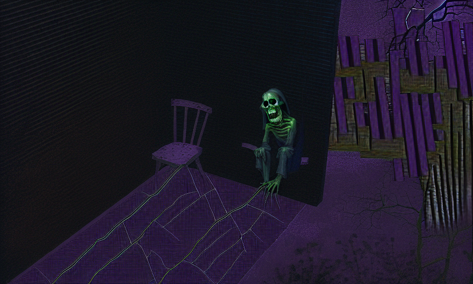
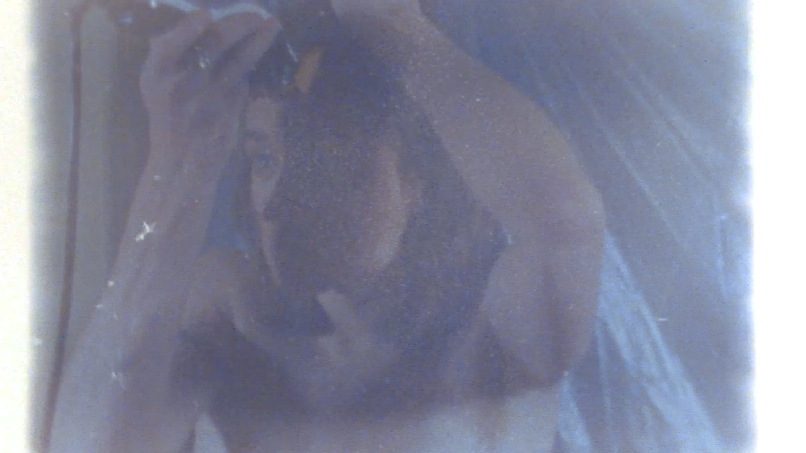

Trouver la peur dans les nuages roses
Oeuvre sur la féminisation de la technologie incorporant images machinima ainsi que modèles de machine learning
Gabriel Leclerc-Giguère et Fannie L’Heureux, 2023.
Oeuvre sur la féminisation de la technologie incorporant images machinima ainsi que modèles de machine learning
Gabriel Leclerc-Giguère et Fannie L’Heureux, 2023.
Court-métrage tourné en ciné-film Super 8 ayant en son corps et coeur, la sexualité des corps transmasculins et leur inclusion conditionnelle dans la communauté cis-gay.
Gabriel Leclerc-Giguère, 2021.